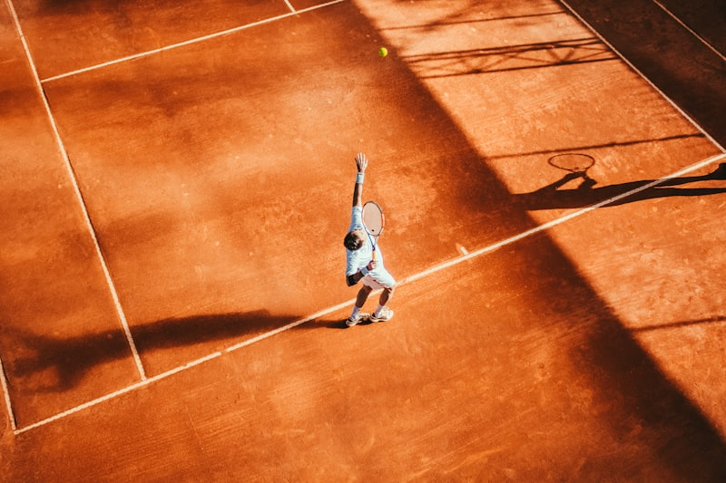
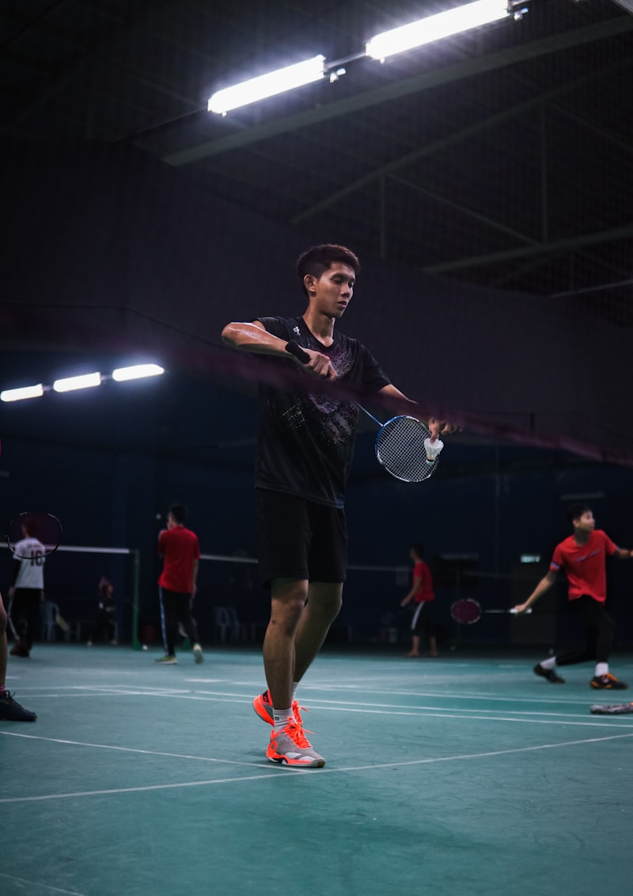
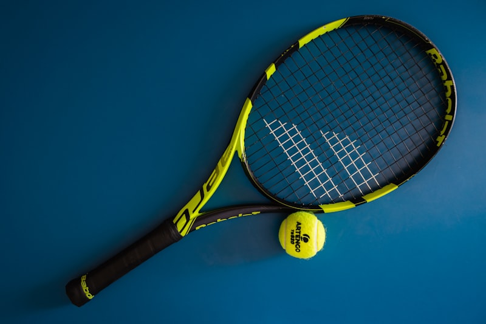
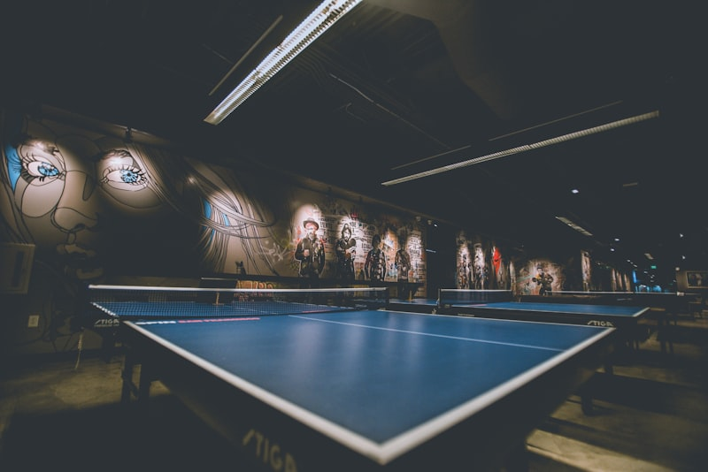
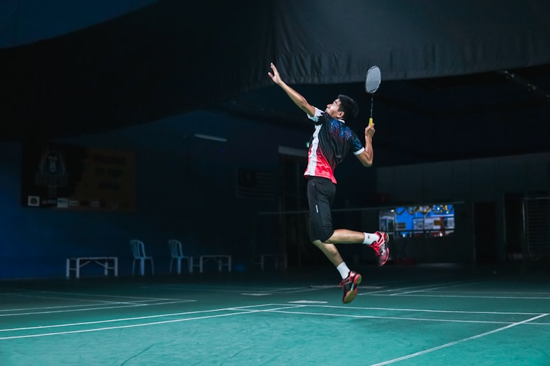

What is Badminton?
Badminton is a racquet sport played using lightweight rackets to hit a shuttlecock across a net. It can be played as singles (one player per side) or doubles (two players per side). The game originated in British India and became an Olympic sport in 1992. It is one of the fastest racquet sports in the world, with shuttlecocks reaching speeds over 300 mph during professional matches!

Image source: Open source photograph of badminton equipment on grass court
The objective is simple: hit the shuttlecock over the net and land it within the opponent's court boundaries. A rally ends when the shuttlecock touches the ground, goes into the net, or lands outside the court. Points are scored by winning rallies, and matches are typically played as best of three games to 21 points.
| Aspect | Details |
|---|---|
| Court Size | 13.4m x 6.1m (doubles) / 13.4m x 5.18m (singles) |
| Net Height | 1.55m at edges, 1.524m at center |
| Shuttlecock Speed | Up to 493 km/h (world record) |
| Olympic Sport Since | 1992 Barcelona Olympics |
Who Plays Badminton?
Badminton is enjoyed by over 220 million people worldwide, making it one of the most popular sports globally. It's particularly dominant in Asian countries like China, Indonesia, Malaysia, India, Japan, and South Korea. The sport is accessible to all ages and skill levels, from casual backyard games to intense professional competitions.

Image source: Sports photograph of professional badminton player during Olympic competition
Famous badminton players have become legends in the sport. Players like Lin Dan (China), Lee Chong Wei (Malaysia), PV Sindhu (India), and Carolina Marín (Spain) have inspired millions to pick up a racket. The sport requires exceptional reflexes, agility, and strategic thinking.
- Lin Dan (China) - Two-time Olympic gold medalist, considered by many as the greatest player ever
- PV Sindhu (India) - First Indian woman to win Olympic silver in badminton, World Champion
- Lee Chong Wei (Malaysia) - Three-time Olympic silver medalist, national hero
- Viktor Axelsen (Denmark) - Current Olympic champion, dominating men's singles
- Tai Tzu-ying (Taiwan) - Known for her deceptive playing style and incredible skills
When to Play Badminton?
Badminton is primarily an indoor sport at the competitive level because even slight wind can significantly affect the shuttlecock's trajectory. However, recreational players often enjoy outdoor games in calm weather. The best times to play depend on your goals and local climate conditions.

AI Prompt: "Professional indoor badminton court with green flooring, proper court lines, net in center, bright overhead lighting, empty court ready for play, photorealistic style"
| Time | Best For | Notes |
|---|---|---|
| Early Morning (6-8 AM) | Serious training | Cooler temperatures, fresh mind |
| Evening (5-8 PM) | Recreational play | Most popular time, courts busy |
| Weekends | Tournaments, group sessions | More time for longer matches |
| Indoor (Year-round) | Consistent practice | No weather interruptions |
Major badminton tournaments follow a yearly calendar. The BWF World Tour includes events like the All England Open (March), Indonesia Open (June), and the BWF World Championships (August). The Olympics feature badminton every four years during the Summer Games.
Where to Play Badminton?
Badminton can be played in various settings, from professional indoor arenas to backyard setups. For serious play, indoor courts with proper flooring and lighting are essential. Here are some popular venues and locations for badminton enthusiasts.

AI Prompt: "Large indoor badminton stadium with multiple courts, spectator seating, professional lighting, tournament atmosphere, photorealistic, bird's eye view"
Best Places to Play in Charlotte, NC:
- Charlotte Badminton Club - Dedicated facility with multiple courts and coaching
- UNC Charlotte Recreation Center - Campus facility with drop-in badminton sessions
- YMCA locations - Multiple courts available for members
- Local community centers - Affordable court rentals
- Parks (casual play) - Freedom Park, Reedy Creek Park for outdoor fun
Top Badminton Destinations Worldwide:
| Country | Famous Venue |
|---|---|
| England | Birmingham Arena (All England Open) |
| Indonesia | Istora Senayan, Jakarta |
| China | Tianhe Gymnasium, Guangzhou |
| Malaysia | Axiata Arena, Kuala Lumpur |
How to Play Badminton?
Learning badminton involves mastering several fundamental skills. Whether you're a beginner or looking to improve, understanding the basic techniques is crucial for enjoying the game and competing effectively.

AI Prompt: "Close-up of hands holding badminton racket with proper forehand grip technique, instructional style, clear lighting, photorealistic"
Basic Techniques:
- Grip: Hold the racket like shaking hands - firm but relaxed. The V between thumb and index finger should align with the racket edge.
- Serve: For beginners, use an underhand serve. Stand behind the service line, hold the shuttle by the feathers, and hit it below your waist.
- Clear: A high, deep shot to the back of the opponent's court. Use full arm extension and follow through.
- Drop Shot: A soft shot that barely clears the net. Use a gentle touch with minimal follow-through.
- Smash: The most powerful attacking shot. Jump and hit the shuttle at the highest point with maximum force.
Rules Summary:
- Games are played to 21 points (must win by 2, cap at 30)
- Best of 3 games wins the match
- You score a point whether serving or receiving
- The shuttlecock must be hit below the waist on serve
- Only one hit per side before sending over the net
Why Play Badminton?
Badminton offers incredible benefits for both physical and mental health. It's a fun way to stay active, socialize, and challenge yourself. Here's why millions of people around the world have fallen in love with this amazing sport.

AI Prompt: "Athletic person mid-jump during badminton smash, showing full body engagement, indoor court, dynamic action shot, photorealistic sports photography style"
Health Benefits:
- Cardiovascular Fitness: Burns up to 450 calories per hour of play
- Agility & Reflexes: Constant movement improves reaction time
- Strength: Develops arm, leg, and core muscles
- Flexibility: Reaching for shots improves range of motion
- Mental Health: Reduces stress and improves mood through exercise
Social Benefits:
- Easy to find playing partners at clubs and recreation centers
- Great for family activities - all ages can play together
- Doubles play encourages teamwork and communication
- Strong community of players worldwide
| Benefit Category | Impact |
|---|---|
| Physical Fitness | ⭐⭐⭐⭐⭐ Excellent full-body workout |
| Accessibility | ⭐⭐⭐⭐⭐ Easy to start, affordable equipment |
| Social Aspect | ⭐⭐⭐⭐ Great for meeting people |
| Mental Stimulation | ⭐⭐⭐⭐⭐ Strategic thinking required |
AI Prompts Used
This page was created with the assistance of AI tools. Below are the prompts and AI models used to generate content and images for this hobby website.
AI Model Used: GitHub Copilot / Claude
Prompt 1 - Page Structure:
"Create a hobby website about badminton with sections for What, Who, When, Where, How, Why, and AI Prompts. Use embedded CSS with blue and green color scheme. Include JavaScript to show/hide sections. Each section needs h2 heading, at least 3 items (paragraphs, tables, figures), and one figure with image and caption."Prompt 2 - Styling:
"Use blue and green colors like badminton court colors. Make it follow CRAP design principles. No Times New Roman, no white background, no black text, no generic blue links. Use 🏸 emoji as navigation divider."Prompt 3 - Content:
"Write informative content about badminton including: history of the sport, famous players like PV Sindhu and Lin Dan, best times to play, where to play in Charlotte NC, basic techniques and rules, and health benefits of playing badminton."Prompt 4 - JavaScript:
"Write JavaScript to show only one section at a time when navigation links are clicked. The 'What' section should be visible by default. Update active class on navigation links."Image AI Prompts:
Note: Some images are open-source photographs. For AI-generated images, the following prompts were used:
Image 1 (Court): "Professional indoor badminton court with green flooring, proper court lines, net in center, bright overhead lighting, empty court ready for play, photorealistic style"
Image 2 (Stadium): "Large indoor badminton stadium with multiple courts, spectator seating, professional lighting, tournament atmosphere, photorealistic, bird's eye view"
Image 3 (Grip): "Close-up of hands holding badminton racket with proper forehand grip technique, instructional style, clear lighting, photorealistic"
Image 4 (Fitness): "Athletic person mid-jump during badminton smash, showing full body engagement, indoor court, dynamic action shot, photorealistic sports photography style"
AI Prompt: "Digital illustration of badminton shuttlecock and racket in motion, dynamic composition, green and blue color scheme, modern sports art style"